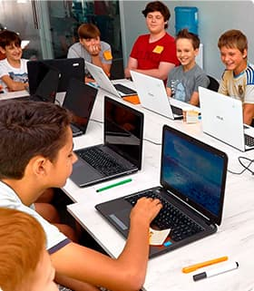

<section class="desc">
  <div class="desc__content container">
    <h2 class="desc__title">
      <svg class="desc__icon" width="18" height="14">
        <use href="./images/svg/quote.svg#quote"></use>
      </svg>
      <p class="desc__quote">
        За останні 5 років кількість дітей, які вміють користуватися
        комп'ютером, збільшилася приблизно в 10 разів.
      </p>
      <p class="desc__quote">
        Як зазначає більшість дослідників, ці тенденції будуть прискорюватися
        незалежно від шкільної освіти.
      </p>
    </h2>
    
    <p class="desc__text">
      Програма навчання створюється за участі відомих спеціалістів IT сектору,
      успішних стартаперів, бізнес-тренерів і підліткових психологів.
    </p>
  </div>
</section>
